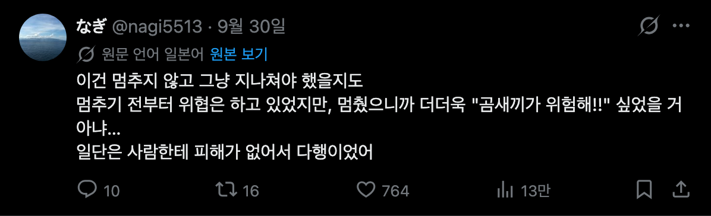
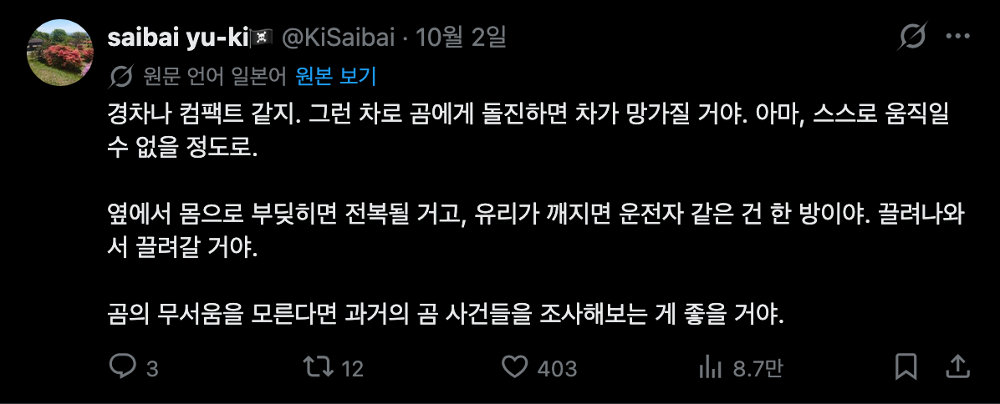
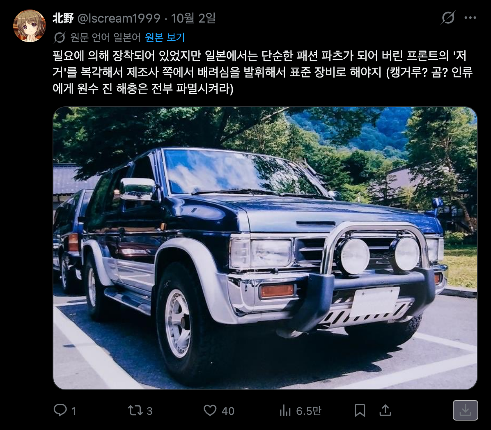

다른 지역 사람들 : 왜 안지나가고 멈춤?


실제로 운전중에 곰을 마주치면, 세우는게 낫다고 함. 차가 더 망가질수 있고, 곰이랑 부딫히면 차가 전복 될 수 있다고 함.

다른 지역 사람들 : 왜 안지나가고 멈춤?


실제로 운전중에 곰을 마주치면, 세우는게 낫다고 함. 차가 더 망가질수 있고, 곰이랑 부딫히면 차가 전복 될 수 있다고 함.
곰 전용 노즈워크 되는거지
노즈워크 ㅅㅂ ㅋㅋㅋㅋㅋㅋㅋㅋㅋㅋㅋㅋㅋㅋㅋㅋㅋㅋㅋㅋㅋㅋㅋㅋ
차가 전복될정도러 부딛히면 곰도 어디하나 부러지는거 아니냐 ㅋㅋ
그냥 한쪽 바퀴에서 자동차 발사대 역할만 할수도 있음
맨몸의 사람이 곰을 상대할 순 없지만 그렇다고 곰 몸뚱이가 무슨 돌덩어리로 이루어진 건 아니야... 차가 전복될 정도로 충돌했는데 곰이 살겠냐?
난 여기서 죽지만...나는 혼자가 아니다! 뒤에오는 내 동료들이...반드시!!
옛날 갤로퍼처럼 저런 캥거루 범퍼같은거 있어야할듯;;
고라니나 새끼멧돼지랑은 다르게
몸통 두꺼운거 보니 차로 들이받으면 뒤집힐수도 있겠다
고라니 조차도 안서고 박으면 라지에이터 짜부되서 돈날리고 운행못함 곰이면 서는게 낫지
야생동물들 진짜 존나 튼튼함
진짜 차가 뒤집어지는거 생각보다 쉬움...
저저 보험사기꾼
창문 깨서 배달 온거 빼먹듯이 한입에 쏘옥 할가봐 난 못 멈출듯
인류에게 원수 진 해충은 전부 파멸시켜라 ㅋㅋㅋㅋㅋㅋㅋ
경적울리는건 별로임?
갈 수 있는 자리가 났는데 왜 멈추냐고 ㅋㅋ
뒤집히지 않게 람보르기니를 타야겠다
아 멈추는게 낫구나 당연히 차 빨리 움직여서 도망가야지했더만
저런 광경이 우리나라 미래인거지?
지리산에 많이 풀어나서 곧 닥칠 미래임
그게 아니라,
영상 보면 곰 어미와 새끼가 차 오니까 길에서 비켜줌
그런데 차가 정차하니까 어미가 흥분함
어미 입장에선 '지나가나보다' 해서 피해줬는데, 멈추니까 '우리 잡으러 온건가?' 싶어져서 흥분해 공격한거.
그래서 사람들이 '왜 안지나가고 멈춘거야' 하는거
물론 운전자도 갑작스러운 상황이라 판단할 여유가 없었고 실수한거지만
전회사 동료가 고향 내려가다가 덩치가 좀 큰 언냐랑 충돌했는데 언냐는 꽥꽥 거리기만하고 멀쩡히 도망갔는데 동료차는 엔진룸까지 다 박살나서 페차했다고 함, ㄷㄷ 곰은 덩치부터 훨씬 더 큰데 충돌하면 진짜 답 없을듯
ㄹㅇ
사람이야 이족보행에 비교적 가벼워서 우리가 미디어에서나 나오는 사고가 나오지만
사족 보행이라 무게 중심이 다른 무거운 동물들이랑 충돌나면 사고 양상이 달라지지...
미국에서 운전 배울 때 큰 동물들 치지 말라고 배웠던가 그럼
사슴 혹은 그 이상 큰 동물들을 주행중에 쳤을 때
재수 없으면 유리창을 뚫고 사람을 친다던가
치고 지나가기엔 힘이 부족해서 운전석 혹은 보조석 위쪽을 덮친다던가
그래서 전손나거나 정말 재수 없으면 사람이 죽어버리는 경우에 대해 주의를 받았음
deer collision, bear collision 따위로 검색해보면
우리가 미디어에서 보듯 사람 치면 차 위로 날아가는? 그런것보다 그냥 차가 개박살 남
주변에 운전 초보때 팁 줄 사람들도 없었는지
그냥 갔으면 됐다 이러고 비추 박은 놈 있는데 댓삭까지 했네 ㅋ
야간 주행중에 소리나고 빛나는 주행중인 차량을 본 야생 동물이
주행 방향으로 뛰어들지 안 뛰어들지 꼭 목숨 걸고 도전 한번 해보길 바람
그래서 픽업트럭이 선호도가 높나?
멈추고 천천히 깔아뭉개야지
저건 곰이 다칠까봐가 아니라 사람이 죽을수도 있으니 멈춰야 하는게 맞지 않나 라고 생각하면서 봤는데
아래쪽 댓글에 있네
대각선으로 애매하게 부딪히면 차 뒤집어짐 진짜로
멧돼지 들이받고 전반부 부터 운전석쪽 앞바퀴 휀다까지 다 나가서 수리하는데 800깨져봤음
다행히 엔진은 손상 안갔는데 엔진 앞쪽 부품들이 상당수 망가졌음.....
살살 앞으로 가면서 새끼쪽박으려하면 알아서 피해준다던데
곰이 진짜 재밌는 드립을 들려줘서 그럼
곰을 치어 죽일생각으로 풀악셀 밟을거 아니면 가만히있는게 나으려나
커다란 돌덩이를 치면 차가 부셔지겠지
사슴련이 전방 좌측에서 대각선으로 달려 드는 바람에 좌측 싹 다 작살남
운전석 문 안 열려서 못 나감
수리비 2만불 나옴 썅련
차가넘어지거나 전복되면 바로
편의점에파는 까먹는젤리되버리는거냐?